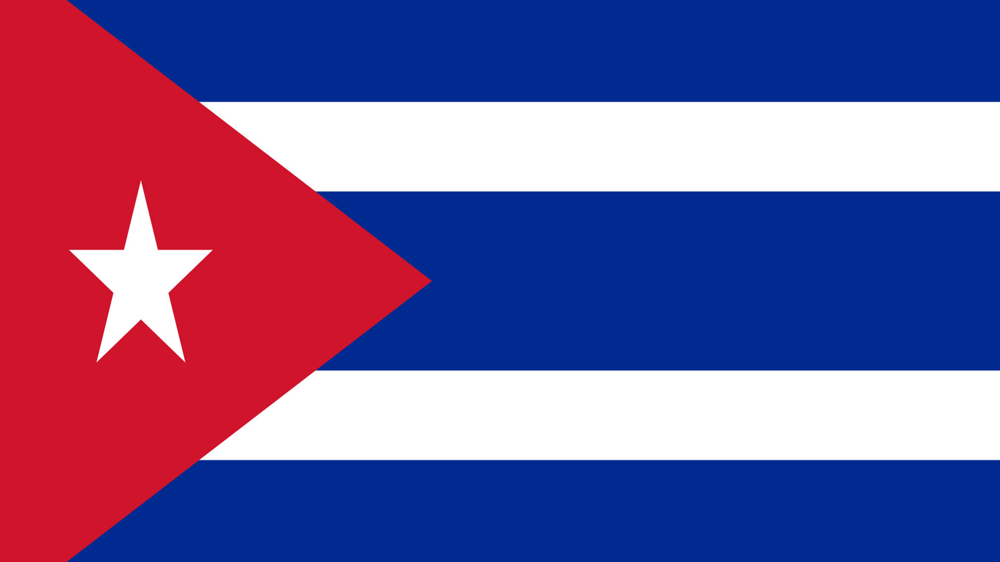

- Столица Кубы — Гавана (La Habana); крупнейшие города: Сантьяго-де-Куба (Santiago de Cuba), Камагуэй (Camagüey).
- Унитарное государство, делится на 16 провинций.
- Президент Кубы — Мигель Диас-Канель.
- Население – 11 млн. человек.
- Государственный язык — испанский.
- Климат тропический. Среднегодовая температура — 25,5 °C. Средняя температура в январе — 22,5 °C, а в августе — 27,8 °C.
- Среднегодовое количество осадков, выпадающих обычно в виде ливней — 1400 мм.
- Куба — член ООН (1945), Движения неприсоединения (1961), Организации карибских государств (1994), Всемирной торговой организации (1995).
- Денежная единица — песо.
- Девиз: «¡Patria o muerte, venceremos!» — «Родина или смерть. Мы победим!»
|

|